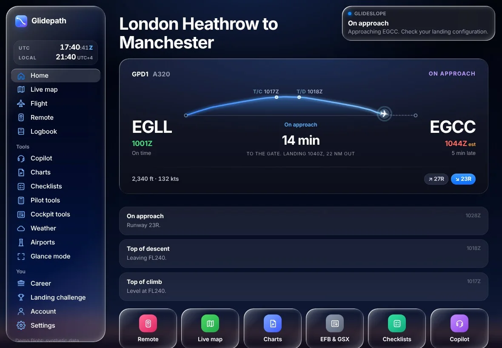

Every phase, the way airlines keep it.
Off block, take-off, top of climb, top of descent, touchdown, on block. Times against your SimBrief plan, the runway in use, and a message before every big moment.
Microsoft Flight Simulator, live on your iPad, phone or second screen. After every landing, an honest review of how you flew.
Demo replay
What is Glidepath?
Glidepath reads your flight straight from Microsoft Flight Simulator and puts it on every screen you own: no add-ons in the Community folder, no juggling tabs.

Off block, take-off, top of climb, top of descent, touchdown, on block. Times against your SimBrief plan, the runway in use, and a message before every big moment.

A score for the take-off, the handling, the approach and the landing, measured from your flight, not guessed. What went well, and the one thing to work on next time.
Sign in on the PC and on your iPad or phone. They find each other on any Wi-Fi, even mobile data. On the same Wi-Fi it goes direct, and your EFB and GSX screens open too.
Built on open data: OurAirportsSimBriefVATSIMIVAOaviationweather.govOpenStreetMapEsri World ImageryRainViewer
Glidepath AI
Copilot reads your live flight and answers in plain words: when to start down, which runway, how to fly this approach. After you park, it coaches you through your review. Stuck on setup? Ask it that too.
Tap one to try it in the app:
Runs on Cloudflare Workers AI. It sees your question and this flight's numbers, not your account. Glidepath doesn't store them.
Set up in two minutes
Run the installer on your sim PC and leave Start Glidepath Bridge now ticked at the end. It finds Microsoft Flight Simulator on its own.
Sign in to your free account on the Bridge page and in the app on your iPad. They connect on any network. No account? On the same Wi-Fi, type the 6-digit code instead.
Recording starts when you push back. When you park, your debrief is waiting.
No plans, no tiers
Other companion apps keep remote control, history and the good bits behind a monthly fee. Glidepath doesn't have a paid version.
Roadmap
What's out, and what's being built next.
Live flight on every screen, the logbook, the landing debrief, remote control and the live camera.
Sign in on the PC and the iPad, any network. Updates from inside the app.
"Flight complete?" after landing and a full review; SID, STAR and approach picking from the sim's own data; a cleaner look.
Copilot answers anything about your flight or the app, and coaches you after every review. Free with an account.
A real flight profile on the live card with T/C and T/D, UTC and local time, iPad layouts that fit, and instant AI answers.
Proper take-off and landing references for the 737, A330 and A350, 777 and 787, regional jets, turboprops and light aircraft.
The SID and STAR from your plan picked for you, and the chosen procedure drawn on the live map.
Questions
Yes. No subscription, no adverts, nothing locked. Glidepath runs on free services.
Microsoft Flight Simulator 2020 and 2024, on Windows 10 and 11. X-Plane isn't supported yet.
No. Glidepath works on an iPad, an iPhone or Android phone, a second monitor, or a laptop. A tablet next to your screen is the nicest way to use it.
No. Open the app in Safari and add it to your Home Screen; it then opens like any other app. It also works in any browser on Android, Mac and PC.
No. Sign in to your free Glidepath account on the PC (on the Bridge page) and on the iPad, and they connect on any network, even mobile data. On the same Wi-Fi it connects directly, which is a little faster and also opens add-on screens like the Fenix EFB and the GSX remote.
Windows shows that for new apps that aren't code-signed yet (signing costs money every year). Choose More info, then Run anyway. If you want to be sure, check the file's SHA-256 against the one on this page; the code is open on GitHub.
No. The Bridge talks to the sim through SimConnect, which is built into Microsoft Flight Simulator. Nothing is added to the sim.
No noticeable effect. The Bridge reads a handful of values a few times a second, the same way flight-tracking apps do.
Any aircraft for the live data, the logbook and the review. Remote control uses the sim's standard controls: default aircraft respond to all of it; study-level add-ons like PMDG, Fenix and FSLabs run their own systems and may ignore some buttons. Every button tells you whether the sim really changed.
Glidepath tells you when there's a new version, for the app and for the Bridge. Press Update; Windows asks once on the PC to allow it, and the Bridge restarts by itself.
Yes: Copilot. Signed in to your free account, you can ask it anything during a flight (briefings, what to do next, technique) or about Glidepath itself, and it coaches you after each review. It's free for 40 questions a day and runs on Cloudflare Workers AI. Without an account, Copilot still gives built-in answers straight from the sim. You can also connect your own model to the Bridge instead.
Without an account, everything stays on your own PC and devices. With an account, your flight summaries are stored so your logbook follows you, and Connect anywhere passes your live data through your account's relay without keeping it, and Glidepath AI gets your question and the flight's numbers only to answer it. Delete your account in the app and it's all gone. The privacy policy has the details.
For 64-bit Windows 10 or 11 with Microsoft Flight Simulator 2020 or 2024. Free.
Prefer no installer? Download the zip (its SHA-256). Open source: read the code on GitHub.